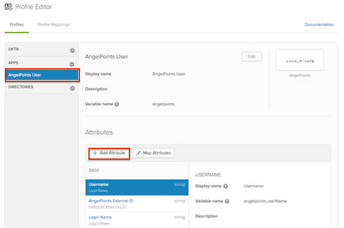
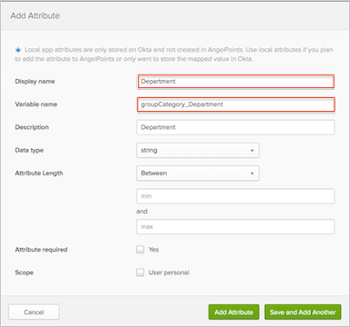
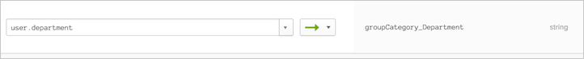
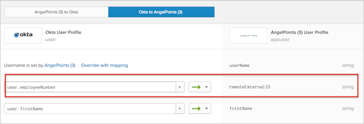

In AngelPoints, each Group belongs to a Group Category. In order to pass user groups to AngelPoints, Okta needs to pass the Group Category name along with the Group name, as defined in your AngelPoints instance. This can be achieved by creating custom attributes specifying the Group Category Name, and mapping it to an attribute in your source System (such as Active Directory or LDAP), which contains the Group value.
For example, you can create a custom attribute groupCategory_Department & map it to Department attribute in Active Directory. The Group to be passed will be the value stored in Active Directory for the user, for example Engineering. The group Category Name passed will be Department.
Note: You cannot create a new Group Category through the API. For this reason, the Group Category Name you pass from Okta should match an existing Group Category Name in AngelPoints.
To Configure AngelPoints to Pass User Groups:
In Okta, navigate to Profile Editor > Apps > AngelPoints User > Add Attribute.

Display name: Type in a display name for the new attribute.
Variable name: Type in a variable name.
The variable name should have a prefix groupCategory followed by an underscore, and the Group Category Name to which the user's group belongs in AngelPoints. For example, if the Group Category name is Department, you would enter groupCategory_Department (as shown in our example in the screen shot below).
Note: When setting the variable name, Okta will not accept any spaces. For this reason, the Group Category Name cannot contain any spaces.
Fill in additional details as needed.
Click Add Attribute.

Go to AngelPoints User Mappings by clicking on Map Attributes. Click on the Okta to AngelPoints tab and set mappings for the attribute you just created.
For example, map Department to groupCategory_Department.

By setting the mapping, you will be sending the User's Department value stored in source system (Engineering/Sales/Marketing) as a Group Name. For example, the user will be added as a member in Group Engineering in Group Category Department in AngelPoints.
The AngelPoints External ID does not have a default mapping in Okta. Before assigning the AngelPoints application to groups in Okta, make sure you have the External ID mappings in place. You can edit the attribute mappings using the Profile Editor:
